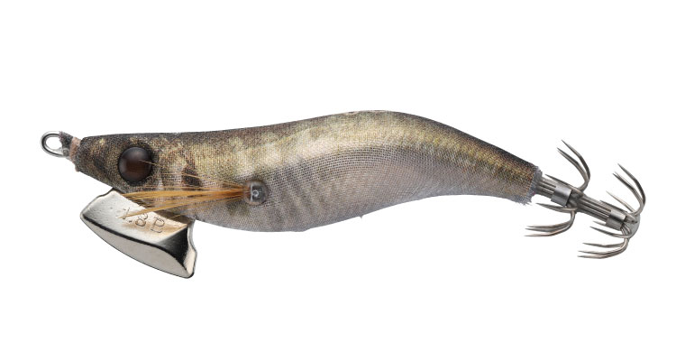
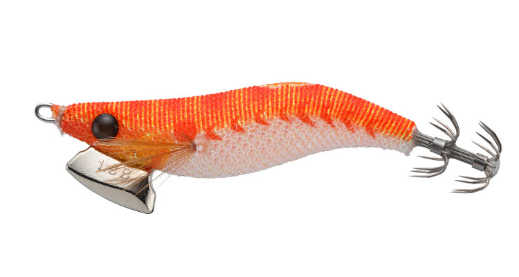
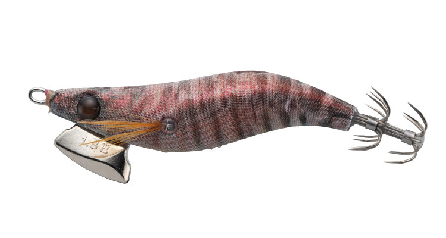
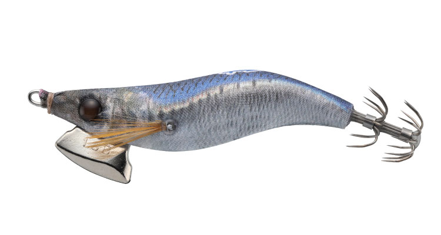
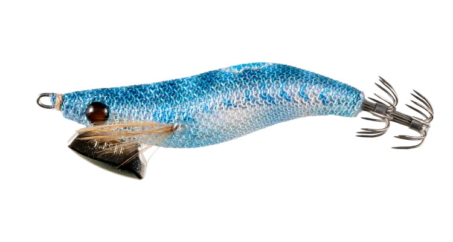

ナオリーレンジ
（NAORY レンジ）
ナオリーレンジはYAMASHITA（ヤマシタ）のライトエギング用エギです。
ロッドアクションの強弱に対するレスポンスを高め、キレのあるダートの幅を自由に変えられる「ライトエギングの基準モデル」。水を掴むヘッドで小さなイカのアタリも感じやすく、ベーシック・シャロー・ディープの3タイプでレンジを選べます。

画像出典:ヤマシタ公式HP
スペック
- メーカー
- YAMASHITA（ヤマシタ）
- タイプ
- ライトエギング用エギ（ベーシック）
- サイズ
- 1.5号／1.8号／2.3号
- 重さ
- 3.8g／6.0g／10g
- 沈下速度
- 約4.5秒/m／約3.2秒/m／約2.5秒/m
- 針
- 1段針（1.5号）／2段針（1.8号・2.3号）
- ターゲット
- ヤリイカ・ケンサキイカ・コウイカ・小型のアオリイカ
▼今すぐチェック

ナオリーレンジの特徴
繊細な感度とキレのあるダートを両立したライトエギングの基準
-
水を掴むヘッドで感度アップ
頭部とまぶたの間の面積を広く取り、水の抵抗を感じやすい設計。レンジキープ力が上がり、小さなイカのアタリも逃しにくくなっています。
-
水を切るシンカーでキレのあるダート
ライトエギング専用のシンカーが水を切り裂き、シャープなダートを生みます。ロッドアクションの強弱で、ダートの幅を自由に変えられます。
-
超高輝度発光とウォームジャケット
GLOWボディは従来より1.5倍発光し、濁りの中でもアピール。太陽や集魚灯の光を吸収して蓄熱する布「ウォームジャケット」で、ベイトに近い温度でイカに迫ります。
ナオリーレンジの使い方
基本は軽いシャクリでダートさせてからのフォール。ロッドアクションに素直に反応するので、小さくシャクれば小さく、強くシャクれば大きくダートします。
イカのいるレンジを探りながら、ダートとフォールを繰り返しましょう。夜間は常夜灯まわりや集魚灯の明暗部を中心に探るのがおすすめです。
ナオリーレンジの得意な状況
堤防や漁港でのライトエギング。ヤリイカ・ケンサキイカ・コウイカのほか、秋の小型のアオリイカにも使えます。常夜灯や集魚灯がある夜の釣りで特に活躍します。
ワンポイント
同じナオリーレンジに、浅い場所用のシャローと深場用のディープもあります。狙うレンジに合わせてタイプを選びましょう。シリーズは単色のレーザーアイで、暗闇でも見分けやすくなっています。
タイプの使い分け
| タイプ（2.3号） | 重さ | 沈下速度 |
|---|---|---|
| ベーシック | 10g | 約2.5秒/m。最初に揃える基準モデル（本記事のモデル） |
| シャロー | 8.3g | 約5.0秒/m。浅い場所や、ゆっくり見せたいときに |
| ディープ | 11g | 約2.0秒/m。深場や潮の速い場所に |
どのタイプも1.5号・1.8号・2.3号の3サイズがあります。サイズで狙うイカの大きさを、タイプで探るレンジを選びましょう。
オススメカラー
公式ラインナップから4色を紹介します（カラー名は公式の表記のまま）。

001 オレンジグロー色の変化が最も大きい超アピールカラー。夜間や濁り潮、中層より上の活性の高いイカに。

012 赤エビシルエット系最強のナチュラルカラー。澄み潮や中〜下層の低活性のイカに。

015 イワシ銀ボディでフラッシングを強化したナチュラルカラー。日中や澄み潮、ヤリイカでは必須の色。

Z021 ブルーコメット（限定色）月明かりが届く澄み潮で真価を発揮する限定色。背中の銀テープがダート時にフラッシング。
画像出典:ヤマシタ公式HP
ナオリーレンジに似ているルアー
-
 エギ王LIVE
ヤマシタ
詳細はこちら＞
エギ王LIVE
ヤマシタ
詳細はこちら＞
2号からあるダートモデル。少し大きいイカや、アオリイカを狙いたいときに。
-
 エギ王K
ヤマシタ
詳細はこちら＞
エギ王K
ヤマシタ
詳細はこちら＞
2.5号からのエギ。アオリイカ狙いで低活性のイカにじっくり見せたいときに。
-
 エギ政 改
DUO
詳細はこちら＞
エギ政 改
DUO
詳細はこちら＞
3号・16gのエギ。アオリイカ狙いで他メーカーのエギを使いたいときに。